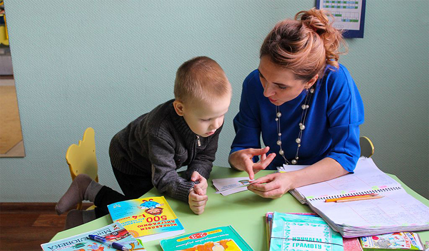

Программа
Логопедическое развитие дошкольников с преподавателем - это процесс, направленный на развитие и улучшение речевых навыков у детей дошкольного возраста. Логопедические занятия проводятся под руководством опытного логопеда или специалиста в области речевого развития. Во время занятий логопед использует различные методики и игры, которые помогают детям развивать артикуляцию, словарный запас, грамматику и правильное произношение звуков. Преподаватель стимулирует ребенка к активной коммуникации и предоставляет ему возможность практиковаться в речи через разнообразные упражнения и задания. Логопедическое развитие дошкольников с преподавателем также включает работу над развитием слухового восприятия и фонематического слуха, что является основой для правильного произношения и понимания речи. Преподаватель также помогает детям развивать навыки чтения и письма, что подготавливает их к успешному обучению в школе. Логопедическое развитие дошкольников с преподавателем - это важный этап в формировании речевых навыков у детей и помогает им преодолеть возможные речевые трудности или задержки. Регулярные занятия с логопедом способствуют развитию уверенности в себе, эффективной коммуникации и улучшению общего речевого развития ребенка.
Цели программы
Цель программы логопедического развития с дошкольниками заключается в помощи детям с различными речевыми нарушениями в развитии и улучшении их коммуникативных навыков и речи. Основные цели программы включают: Улучшение артикуляции и произношения: Программа направлена на развитие правильной артикуляции звуков и улучшение произношения. Она помогает детям осознать и контролировать органы артикуляции, чтобы они могли правильно и четко произносить звуки и слова. Развитие слухового восприятия: Программа логопедического развития помогает детям улучшить слуховое восприятие и различать звуки и интонации речи. Это помогает им лучше понимать и интерпретировать речь других людей. Развитие словарного запаса и грамматических навыков: Программа помогает детям расширить свой словарный запас и улучшить грамматические навыки. Она включает в себя игры, упражнения и активности, которые помогают детям узнать новые слова, фразы и правила грамматики. Развитие связной речи и умения выражать свои мысли: Программа помогает детям развить связную речь и улучшить свои навыки выражать свои мысли и идеи. Она включает в себя диалоги, рассказы и другие активности, которые помогают детям организовать свои мысли и строить связную речь. Развитие коммуникативных навыков: Программа логопедического развития помогает детям развить свои коммуникативные навыки, такие как слушание, реагирование и установление контакта с другими людьми. Она включает в себя игры и упражнения, которые помогают детям учиться общаться и взаимодействовать с окружающими. Цель программы логопедического развития с дошкольниками - это помощь детям с речевыми нарушениями в преодолении трудностей в речи и развитии навыков коммуникации, что позволяет им более успешно взаимодействовать со сверстниками и взрослыми в повседневной жизни и в образовательной среде.